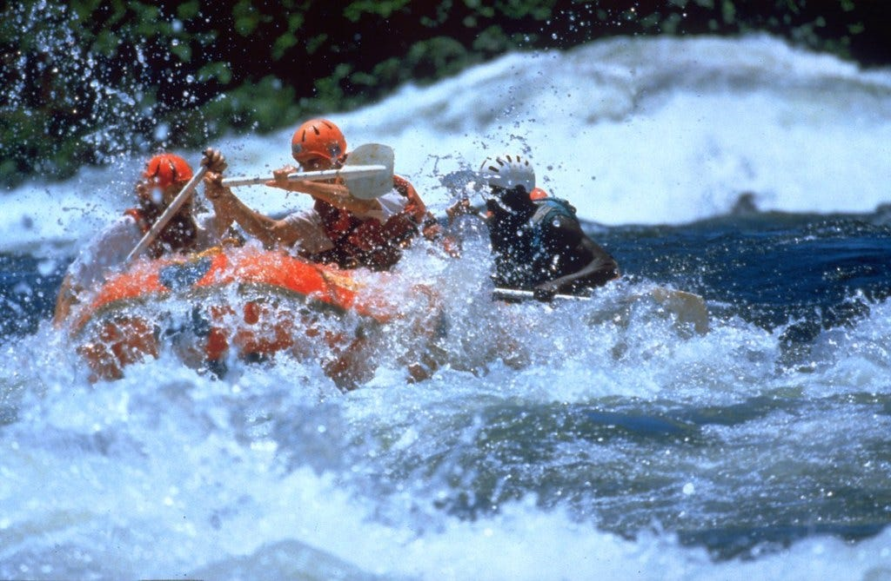
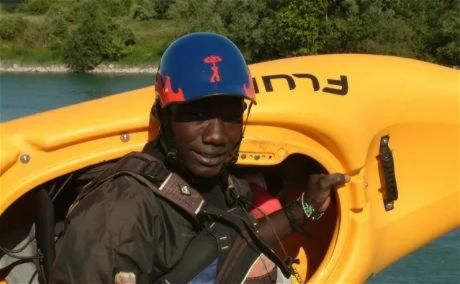
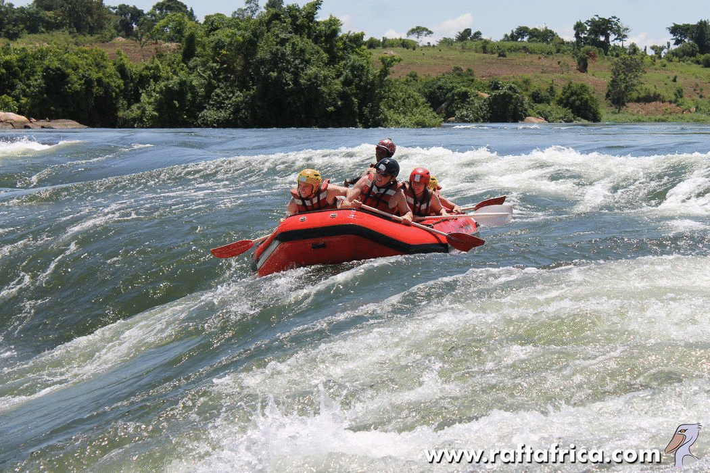

In 2007 I had the opportunity to go white water rafting on the Nile in Jinja, Uganda, "The Source of the Nile."
Aside from the fear of crocodiles, it was a great experience. I'll tell you a bit about it here.

Jinja is a city and metropolitan area in Uganda, located on the northern shores of Lake Victoria. Marketers often refer to it as "the adventure capital of Africa."
Header 2
Now, I don't really expect anyone to read this. But in the off-chance someone does, I'm giving a shoutout to our river guide: Juma. Dude was hilarious.
His job, as he said--perhaps simply to scare us wazungu--was to get us on top of his kayak before the crocodiles got there if we fell out on one of the rapids.

Juma
Part of the process of Juma explaining his job involved him unceremoniously flipping his partner kayaker over in the water while saying "now, see, if I come to you, don't do this." He flipped his partner back over. They were gasping and began yelling at Juma, who proceeded to re-flip them. "You must remain calm. Please do not yell, or panic. Because, I do not want this to happen to me. Okay?"
After a few hours on the river, we took a break to just float. We passed a large rock jutting up from the water to a height of around 10ft. A few of us had decided to swim a bit, just around our rafts.
That's when he told us "You see that rock? 2 weeks ago a crocodile pulled a fisherman from his boat (small canoe-like structures) and flung him onto that rock. He died." Juma was obviously a master jokester as well as being a master and famous kayaker, but we all decided to get out of the water.
We didn't have a camera with us, but I found a gif of someone else who flipped around the same spot we did. Also, we never saw a crocodile (I have zero complaints about that).

Note: I included the Rwandan flag on the page because that's where I lived at the time of this trip, which is why it was even a possibility for me to do something like this. Rwanda Nziza